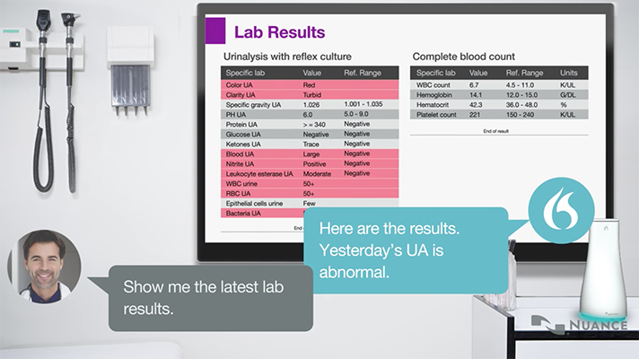
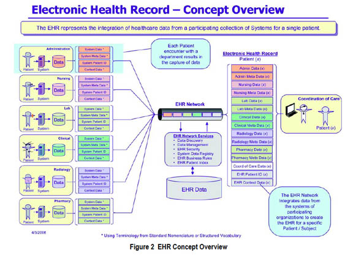

While AI is applicable in almost all industries, it is especially promising in the field of healthcare. As seen on the chart to the right, taken from an Accenture report, AI can be used to improve upon the physical, administrative, and data driven tasks within healthcare.
Top Applications in Healthcare and Projected Value
These are some top uses of A.I

* ”Value” is the estimated potential annual benefits for each application by 2026.
Robot Assisted Surgery
Combining AI with precision robotics, surgical procedures have the potential to be improved a lot. Surgical robots work in conjunction with a human in order to complete the procedures. They allow the procedure to happen quicker, and with less post-operation pain or risk of infection.
According to the New England Journal of Medicine, between 2007 and 2010, the number of robot assisted surgeries tripled from 80,000 to 205,000 annual procedures. Not only can these robots perform at a high degree of accuracy, they can also cut costs. According to the same article, procedure costs can drop by thousands of dollars by utilizing a robot. The most notable costs savings procedure is a Nephrectomy, which is performed by a robot for $10,000 less. These machines can be used in a wide range of procedures.Below is a video of some current and future procedures that are benefiting from robot assisted surgery.
There are, however, drawbacks. A surgeon must perform between 150 and 250 procedures with the robot to be able to learn it. Additionally, they are very expensive to purchase (~$2MM) and costly to maintain.
Virtual Nursing Assistants
According to the American Association of Colleges of Nursing, there is and has been a nursing shortage. Additionally, a study by Aiken et al. analyzed the effects of declines in the number of nurses on patient welfare. They found that “each additional patient per nurse was associated with a 7% increase in patient mortality and a 23% increase in nurse burnout”. Virtual nursing assistants can be used to fill this dangerous void. Nuance is a company that is currently developing this kind of technology.
Above is an example of a portal a patient might use in order to interact with a virtual nurse. Information can be shared between the healthcare provider and the patient. The patient can then interact with the portal to answer their questions, receive consultation, or let them schedule future appointments.
Administrative Workflow Assistance
While AI provides benefits to patients such as precision robotic surgery or increased diagnostic accuracy, there are also benefits that the healthcare provider can directly receive: cost savings. Below is a graph that shows the annual US expenditure on healthcare from 1960 to 2016. The information is from a dataset compiled by the Centers for Medicare and Medicaid Services and was organized into a visual by our team using Infogram.
AI may also be leveraged in order to maximize the workflow efficiency within hospitals and clinics. Maintaining patient records is a hassle. That is why according to the CDC, 86.9% of physicians use some form of electronic medical records. That is because there are digital tools now that can greatly improve the workflow process of sorting and organizing records. AI can be used to optimize test results, insurance reimbursements, radiology reporting and more.
Below is an example of a workflow process for electronic health records. As you can see, there are many moving parts, and numerous opportunities to aggregate data. The AI would utilize this data and improve upon the organization and recall of the systems holding the data.
